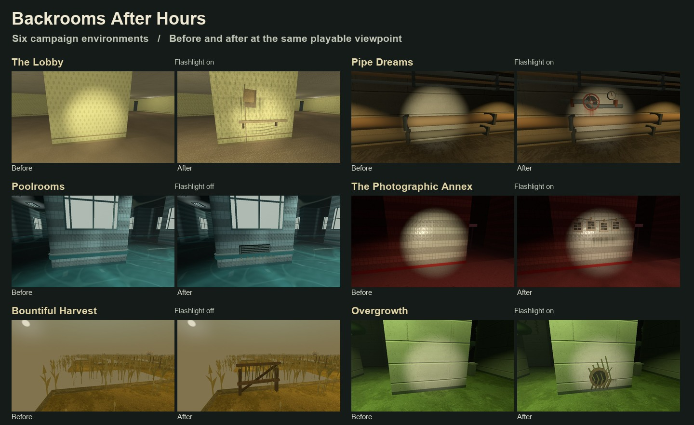
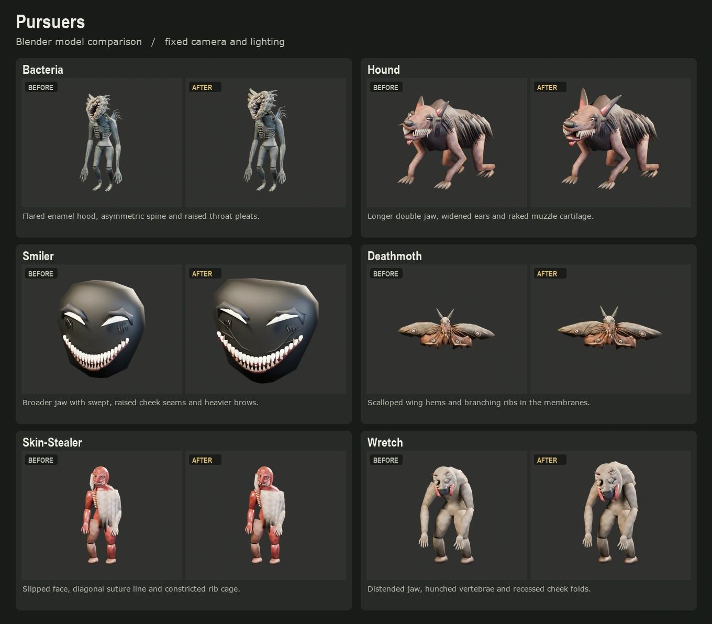
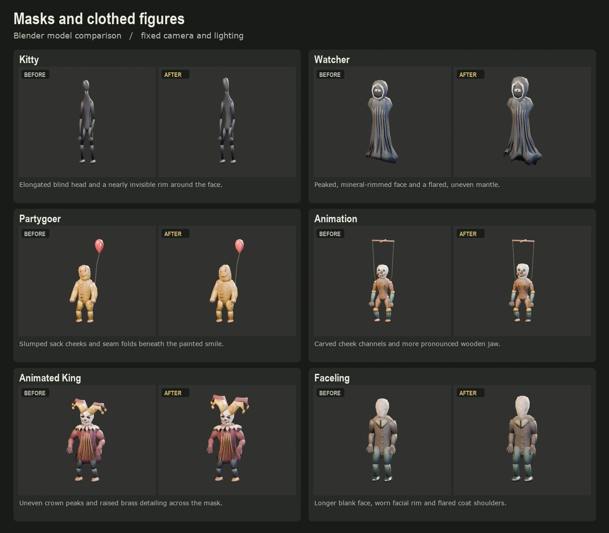
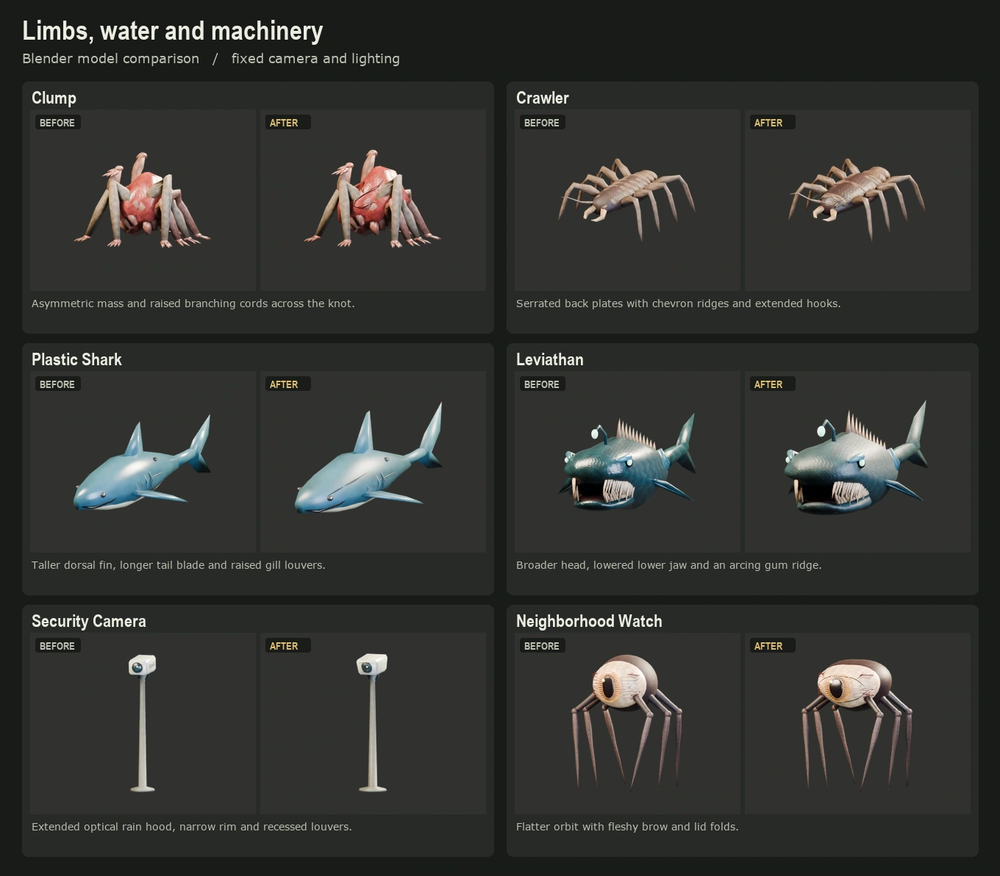
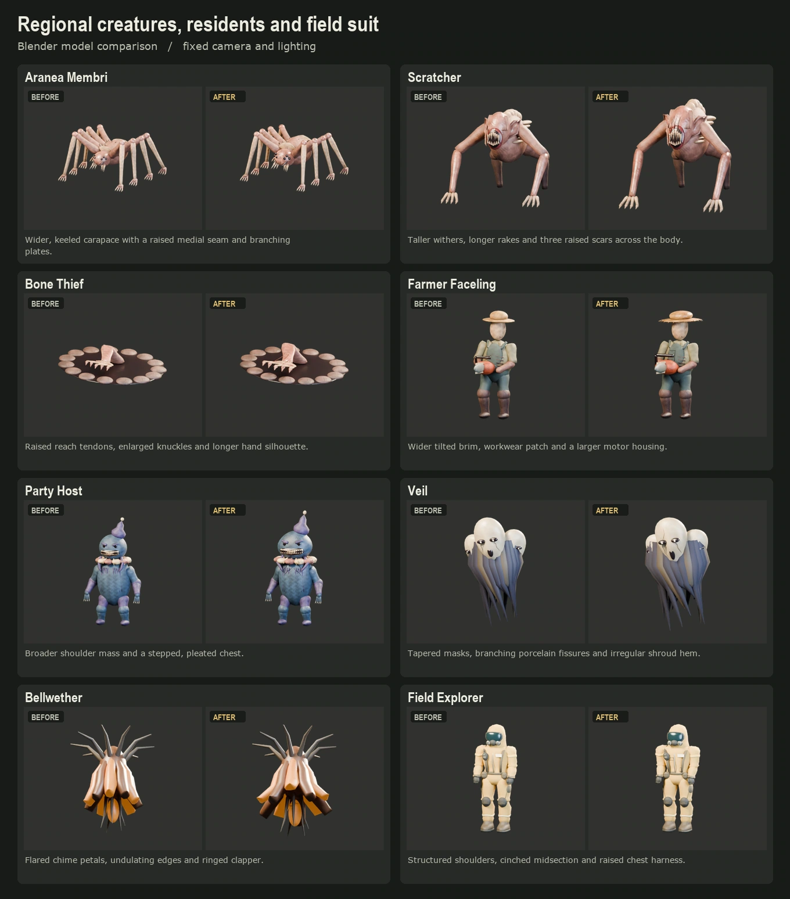

Campaign graphics review
Compare the released campaign with the previous build at the same camera position. The room gallery includes both flashlight states. The cast sheets match animation time, camera and lighting.
Rooms under a flashlight
Follow the worn surfaces through the Lobby, inspect the waterline in the Poolrooms or compare a return visit with its first encounter.

Monsters, residents and explorers
The Blender sheets make it easier to inspect changes to individual faces, joints and silhouettes. The films show how those details read in the game.


Pursuers

Masks and clothed figures

Limbs, water and machinery

Residents and field explorerCompare the same cast under in-game lighting in four runtime contact sheets.


Motion studies
Frame time and hosting
Four routes exercise Level 0, the Dark Poolrooms, a Bacteria attack and a host with seven explorers in view. The report includes the actual rendering resolution, draw calls, triangles, renderer memory counters and hardware used.
Read the measurements and test conditions